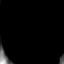
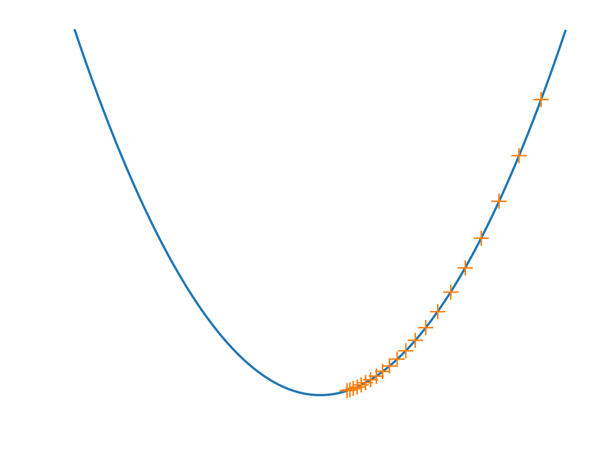

A gentle introduction to
Collaborative filtering in Python
and an overview of Surprise
Taxonomy
- Content-based
Recommend me items that are
similar to those I like
"I see you liked Harry Potter 1. Would you
be interested in Harry Potter 2...?"
- Collaborative filtering
Recommend me items liked by my peers
Able to leverage social information. Usually yields better
results.
- Knowledge-based
Basically everything else (used for cars, loans, real estate...)
Different context
Rating prediction
$$\begin{pmatrix}
\color{#ff2c2d}{?} & 2 & \color{#ff2c2d}{?} & 3 & 1\\
1 & 5 & 1 & 4 & \color{#ff2c2d}{?}\\
\color{#ff2c2d}{?} & 4 & \color{#ff2c2d}{?} & \color{#ff2c2d}{?} & \color{#ff2c2d}{?}\\
2 & 3 & \color{#ff2c2d}{?} & 5 & 1\\
2 & \color{#ff2c2d}{?} & 4 & \color{#ff2c2d}{?} & 3\\
\color{#ff2c2d}{?} & 1 & 4 & 5 & \color{#ff2c2d}{?}\\
\end{pmatrix}
\begin{matrix}
\text{Alice}\\
\text{Bob}\\
\text{Charlie}\\
\text{Daniel}\\
\text{Eric}\\
\text{Frank}\\
\end{matrix} $$
- Rows are users, columns are items
- ~ 99% of the entries are missing
- Your mission: predict them
About me
- Nicolas Hug
- PhD Student (University of Toulouse III)
- Needed a Python library for RS research... Did it.
Outline
- Two prediction algorithms
- Neighborhood method (k-NN)
- Matrix factorization
Rating prediction vs. classification (or regression)
$$
\begin{pmatrix}
\color{#ff2c2d}{?} & \checkmark & \color{#ff2c2d}{?} & \checkmark & \checkmark\\
\checkmark & \checkmark & \checkmark & \checkmark & \color{#ff2c2d}{?}\\
\color{#ff2c2d}{?} & \checkmark & \color{#ff2c2d}{?} & \color{#ff2c2d}{?} & \color{#ff2c2d}{?}\\
\checkmark & \checkmark & \color{#ff2c2d}{?} & \checkmark & \checkmark\\
\checkmark & \color{#ff2c2d}{?} & \checkmark & \color{#ff2c2d}{?} & \checkmark\\
\color{#ff2c2d}{?} & \checkmark & \checkmark & \checkmark & \color{#ff2c2d}{?}\\
\end{pmatrix}
\text{vs.}
\begin{pmatrix}
\checkmark & \checkmark & \checkmark & \checkmark & \checkmark \\
\checkmark & \checkmark & \checkmark & \checkmark & \checkmark \\
\checkmark & \checkmark & \checkmark & \checkmark & \checkmark \\
\checkmark & \checkmark & \checkmark & \checkmark & \checkmark \\
\checkmark & \checkmark & \checkmark & \checkmark & \color{#ff2c2d}{?} \\
\checkmark & \checkmark & \checkmark & \checkmark & \color{#ff2c2d}{?} \\
\end{pmatrix}
$$
- $\checkmark$ = known entry
- $\color{#ff2c2d}{?}$ = to be predicted
Somehow a more general problem
Math is fun (right?)
-
Neighborhood method:
$ \hat{r}_{ui} = \frac{\sum\limits_{v \in k\text{NN}(u)} \text{sim}(u, v) \times
r_{vi}}{\sum\limits_{v \in k\text{NN}(u)} \text{sim}(u, v)}$
-
Matrix Factorization:
$
\begin{align*}
\min_{p_u, q_i, b_u, b_i} \sum_{r_{ui} \in R}
\begin{pmatrix}
\left[r_{ui} - (\mu + b_u +
b_i + p_u^Tq_i)\right]^2\\ + \lambda \left(||p_u||^2 + ||q_i||^2 + b_u^2 +
q_i^2\right)
\end{pmatrix}
\end{align*}
$
Don't panic
Just breath
It all fits in ~10 lines of code
neighborhood method
- We have a history of past ratings
-
We need to predict Alice's rating for
Titanic
- Find the users that have the same tastes as Alice (using the
rating history)
- Average their ratings for Titanic
That's it
We need a similarity measure
$$\begin{pmatrix}
\color{#ff2c2d}{?} & \color{#fa0}{2} & ? & \color{#fa0}{2} & \color{#fa0}{5} & ? & \color{#fa0}{4}\\
1 & \color{#1b91ff}{1} & ? & \color{#1b91ff}{3} & \color{#1b91ff}{5} & ? & ?\\
& & & \vdots & & &\\
4 & \color{#1b91ff}{5} & ? & ? & \color{#1b91ff}{1} &
4 & \color{#1b91ff}{2}\\
\end{pmatrix}
\begin{matrix}
\text{Alice}\\
\text{Bob}\\
\vdots\\
\text{Zoe}\\
\end{matrix}
$$
- $\text{sim}(u, v) =$ number of
common rated items
- $\text{sim}(u, v) =$ average aboslute difference between ratings
(it's actually a distance)
- $\text{sim}(u, v) =$ cosine angle between $u$ and $v$
- $\text{sim}(u, v) =$ Pearson correlation coefficient betwen $u$
and $v$
- About 3 million other measures
- $\text{cosine_sim}(u, v) = \frac{
\sum\limits_{i \in I_{uv}} r_{ui} \cdot r_{vi}}
{\sqrt{\sum\limits_{i \in I_{uv}} r_{ui}^2} \cdot
\sqrt{\sum\limits_{i \in I_{uv}} r_{vi}^2}
}$
-
$\text{pearson_sim}(u, v) = \frac{ \sum\limits_{i \in I_{uv}}
(r_{ui} - \mu_u) \cdot (r_{vi} - \mu_{v})} {\sqrt{\sum\limits_{i
\in I_{uv}} (r_{ui} - \mu_u)^2} \cdot \sqrt{\sum\limits_{i \in
I_{uv}} (r_{vi} - \mu_{v})^2} }$
- $\text{msd}(u, v) = \frac{1}{|I_{uv}|} \cdot \sum\limits_{i
\in I_{uv}} (r_{ui} - r_{vi})^2$
neighborhood method
- We have a history of past ratings
-
We need to predict Alice's rating for
Titanic
- Find the users that have the same tastes as Alice (using the
rating history)
- Average their ratings for Titanic
That's it
$$\begin{pmatrix}
\color{#ff2c2d}{?} & \color{#fa0}{2} & ? & \color{#fa0}{2} & \color{#fa0}{5} & ? & \color{#fa0}{4}\\
1 & \color{#1b91ff}{1} & ? & \color{#1b91ff}{3} & \color{#1b91ff}{5} & ? & ?\\
& & & \vdots & & &\\
4 & \color{#1b91ff}{5} & ? & ? & \color{#1b91ff}{1} &
4 & \color{#1b91ff}{2}\\
\end{pmatrix}
\begin{matrix}
\text{Alice}\\
\text{Bob}\\
\vdots\\
\text{Zoe}\\
\end{matrix}
$$
def neighborhood(u, i):
'''Return estimated rating of user u for item i.
rating_hist is a list of tuples (user, item, rating)'''
# Retrieve users having rated i
neighbors = [(sim[u, v], r_vj)
for (v, j, r_vj) in rating_hist if (i == j)]
# Sort them by similarity with u
neighbors.sort(key=lambda tple: tple[0], reversed=True)
# Compute weighted average of the k-NN's ratings
num = sum(sim_uv * r_vi for (sim_uv, r_vi) in neighbors[:k])
denum = sum(sim_uv for (sim_uv, _) in neighbors[:k])
return num / denum
Remember me? $\hat{r}_{ui} = \frac{\sum\limits_{v \in k\text{NN}(u)} \text{sim}(u, v) \times
r_{vi}}{\sum\limits_{v \in k\text{NN}(u)} \text{sim}(u, v)}$
neighborhood method
- We have a history of past ratings
-
We need to predict Alice's rating for
Titanic
- Find the users that have the same tastes as Alice (using the
rating history)
- Average their ratings for Titanic
That's it... ?
There are (approximately) half a billion variants
- Normalize the ratings
- Remove bias (some users are mean)
- Use a fancier aggregation
- Discount similarities (give them more or less confidence)
- Use item-item similarity instead
- Or use both kinds of similarities!
- Cluster users and/or items
- Learn the similarities
- Blah blah blah...
Outline
- Two prediction algorithms
Matrix Factorization
- A lot of hype during the Netflix Prize
(2006-2009: improve our system, get rich)
- Model the ratings in an insightful way
- Takes its root in dimentionality reduction and SVD
Before SVD: PCA
- Here are 400 greyscale images (64 x 64)
- Put them in a 400 x 4096 matrix $X$:
$$
\newcommand{\horzbar}{\color{white}{\Rule{2.5ex}{0.5pt}{0.1pt}}}
\newcommand{\vertbar}{\color{white}{\Rule{0.5pt}{1pt}{2.5ex}}}
X=
\begin{pmatrix}
\horzbar & \text{Face 1} & \horzbar\\
\horzbar & \text{Face 2} & \horzbar\\
& \vdots &\\
\horzbar & \text{Face 400} & \horzbar\\
\end{pmatrix}
$$
Before SVD: PCA
PCA will reveal 400 of those creepy typical guys:

These guys can build back all of the original
faces
$
\begin{align*}
\text{Face 1} = &\alpha_1 \cdot \text{Creepy guy #1}\\
+ &\alpha_2 \cdot \text{Creepy guy #2}\\
+ &\cdots\\
+ &\alpha_{400} \cdot \text{Creepy guy #400}
\end{align*}
$
PCA also gives you the $\alpha_i$.
In advance: you don't need
all the 400 guys
PCA on a rating matrix? Sure!
Assume all ratings are known
$
X = \begin{pmatrix}
\horzbar & \text{Face 1} & \horzbar\\
\horzbar & \text{Face 2} & \horzbar\\
& \vdots &\\
\horzbar & \text{Face 400} & \horzbar\\
\end{pmatrix}
~~~~~
R = \begin{pmatrix}
\horzbar & \text{Alice} & \horzbar\\
\horzbar & \text{Bob} & \horzbar\\
& \vdots &\\
\horzbar & \text{Zoe} & \horzbar\\
\end{pmatrix}
$
Exact same thing! We just have ratings
instead of pixels. PCA will reveal typical
users.
$
\begin{align*}
\text{Alice} &= 10\% \color{#1b91ff}{\text{ Action fan}} + 10\%
\color{#1b91ff}{\text{ Comedy fan}} +
50\% \color{#1b91ff}{\text{ Romance fan}} +\cdots\\
\text{Bob} &= 50\% \color{#1b91ff}{\text{ Action fan}} + 30\%
\color{#1b91ff}{\text{ Comedy fan}} + 10\%
\color{#1b91ff}{\text{ Romance fan}} +\cdots\\
\text{Zoe} &= \cdots
\end{align*}
$
PCA on a rating matrix? Sure!
Assume all ratings are known. Transpose the
matrix
$
X = \begin{pmatrix}
\horzbar & \text{Face 1} & \horzbar\\
\horzbar & \text{Face 2} & \horzbar\\
& \vdots &\\
\horzbar & \text{Face 400} & \horzbar\\
\end{pmatrix}
~~~~~
R^T = \begin{pmatrix}
\horzbar & \text{Titanic} & \horzbar\\
\horzbar & \text{Toy Story} & \horzbar\\
& \vdots &\\
\horzbar & \text{Fargo} & \horzbar\\
\end{pmatrix}
$
Exact same thing! PCA will reveal typical
movies.
$$
\begin{align*}
\text{Titanic} &= 20\% \color{#1b91ff}{\text{ Action}} + 0\%
\color{#1b91ff}{\text{ Comedy}} +
70\% \color{#1b91ff}{\text{ Romance}} +\cdots\\
\text{Toy Story} &= 30\% \color{#1b91ff}{\text{ Action}} + 60\%
\color{#1b91ff}{\text{ Comedy}} + 0\%
\color{#1b91ff}{\text{ Romance}} +\cdots\\
\end{align*}
$$
Note: in practice, the factors semantic is not clearly defined
SVD is PCA2
- PCA on $R$ gives you the typical users $U$
- PCA on $R^T$ gives you the typical movies $M$
- SVD gives you both in one shot!
$$R = M \Sigma U^T$$
$\Sigma$ is diagonal, it's just a scaler.
$$\bbox[5px,border:2px solid #1b91ff]{R = M U^T}$$
This is our matrix factorization!
The model of SVD
$$
\bbox[5px,border:2px solid #1b91ff]{R = M U^T}\\
\begin{pmatrix}
&&&&\\
&&r_{ui}&&\\
&&&&\\
\end{pmatrix}
=
\begin{pmatrix}
&&&&\\
&\horzbar&p_u& \horzbar&\\
&&&&\\
\end{pmatrix}
\begin{pmatrix}
&&\vertbar&&\\
&&q_i&&\\
&&\vertbar&&\\
\end{pmatrix}\\
r_{ui} = p_u \cdot q_i
$$
$$
\begin{align*}
r_{ui}= \sum_{c \in \text{concepts}} \text{affinity of } u \text{ for } c \times
\text{affinitiy of } i \text{ for }c
\end{align*}
$$
$$
\begin{align*}
\text{Titanic} &= 20\% \color{#1b91ff}{\text{ Action}} + 0\%
\color{#1b91ff}{\text{ Comedy}} +
70\% \color{#1b91ff}{\text{ Romance}} +\cdots\\
\text{Alice} &= 15\% \color{#1b91ff}{\text{ Action}} + 0\%
\color{#1b91ff}{\text{ Comedy}} +
80\% \color{#1b91ff}{\text{ Romance }} +\cdots\\
\text{Bob} &= 10\% \color{#1b91ff}{\text{ Action}} + 80\%
\color{#1b91ff}{\text{ Comedy }} + 5\%
\color{#1b91ff}{\text{ Romance }} +\cdots\\
\end{align*}
$$
- Rating(Alice, Titanic) will be high
- Rating(Bob, Titanic) will be low
So how to compute $M$ and $U$?
$$\bbox[5px,border:2px solid #1b91ff]{R = M (\Sigma) U^T}$$
- Columns of $M$ are the eigenvectors of $AA^T$
- Columns of $U$ are the eigenvectors of $A^TA$
- Associated eigenvalues make up the diagonal of $\Sigma$
- There are very efficient algorithms in the wild
- Alternate option: find the $p_u$s
and the $q_i$s that minimize the reconstruction error
$$\sum_{r_{ui} \in R} (r_{ui} - p_u \cdot q_i)^2$$
(With some orthogonality constraints). There are also very
efficient algorithms in the wild
So, piece of cake right?
We assumed that $R$ was dense
- But it's not! 99% are missing
- $RR^T$ and $R^TR$ are not even defined
- So $M$ and $U$ are not defined either
- There is no SVD $R = MU^T$
Two options:
- Fill the missing entries with a simple heuristic
- " Let's just not give a single
f*ck" -- Simon Funk
(ended-up top-3 of the Netflix Prize for some time)
Approximation
Dense case: find the $p_u$s and the $q_i$s that minimize the
total reconstruction error
$$\sum_{r_{ui} \in R} (r_{ui} - p_u \cdot
q_i)^2$$ With orthogonal $p_u$s and $q_i$s
Sparse case: find the $p_u$s and the $q_i$s that minimize the
partial reconstruction error
$$\sum_{r_{ui} \in R} (r_{ui} - p_u \cdot
q_i)^2$$
(forget
about orthogonality).
Yes, it's just the same.
Minimization by gradient descent
We want the value $\theta$ such that $f(\theta)$ is minimal:
- Compute $\frac{\partial f}{\partial \theta}$
- Randomly initialize $\theta$
- $\theta^{(t+1)} = \theta^{(t)} - \alpha \frac{\partial
f}{\partial \theta}$ (do this until you're fed up)

Minimization by (stochastic) gradient descent
Our parameter $\theta$ is the $p_u$s and $q_i$s. The function $f$ to
minmize is
$$f(p_u, q_i) = \sum_{r_{ui} \in R} (r_{ui} - p_u \cdot q_i)^2$$
p = np.random.normal(size=F)
q = np.random.normal(size=F)
for iter in range(n_max_iter):
for u, i, r_ui in rating_hist:
err = r_ui - np.dot(p[u], q[i])
p[u] = p[u] + learning_rate * err * q[i]
q[i] = q[i] + learning_rate * err * p[u]
Some last details
Unbias the ratings, add regularization: you get
"SVD":
$$
\begin{align*}
\min_{p_u, q_i, b_u, b_i} \sum_{r_{ui} \in R}
\begin{pmatrix}
\left[r_{ui} - (\mu + b_u +
b_i + p_u^Tq_i)\right]^2\\ + \lambda \left(||p_u||^2 + ||q_i||^2 + b_u^2 +
q_i^2\right)
\end{pmatrix}
\end{align*}
$$
Good ol' fashioned ML paradigm:
- Assume a model for your data ($R = MU^T$)
- Fit your model parameters to the observed data
- Praise the Lord and hope for the best
Surprise
A Python library for recommender systems
(Or rather: A python library for rating prediction
algorithms)
Why?
- Needed a Python lib for quick and easy prototyping
- Needed to control my experiments
So why not scikit-learn?
Rating prediction ≠
regression or classification
$$\begin{pmatrix}
\checkmark & \color{#ff2c2d}{?} & \checkmark & \color{#ff2c2d}{?} & \color{#ff2c2d}{?}\\
\color{#ff2c2d}{?} & \color{#ff2c2d}{?} & \color{#ff2c2d}{?} & \color{#ff2c2d}{?} & \checkmark\\
\checkmark & \color{#ff2c2d}{?} & \checkmark & \checkmark & \color{#ff2c2d}{?}\\
\color{#ff2c2d}{?} & \color{#ff2c2d}{?} & \checkmark & \color{#ff2c2d}{?} & \color{#ff2c2d}{?}\\
\color{#ff2c2d}{?} & \checkmark & \color{#ff2c2d}{?} & \checkmark & \color{#ff2c2d}{?}\\
\checkmark & \color{#ff2c2d}{?} & \color{#ff2c2d}{?} & \color{#ff2c2d}{?} & \checkmark\\
\end{pmatrix}
\neq
\begin{pmatrix}
\checkmark & \checkmark & \checkmark & \checkmark & \checkmark \\
\checkmark & \checkmark & \checkmark & \checkmark & \checkmark \\
\checkmark & \checkmark & \checkmark & \checkmark & \checkmark \\
\checkmark & \checkmark & \checkmark & \checkmark & \checkmark \\
\checkmark & \checkmark & \checkmark & \checkmark & \color{#ff2c2d}{?} \\
\checkmark & \checkmark & \checkmark & \checkmark & \color{#ff2c2d}{?} \\
\end{pmatrix}
$$
Yes :)
clf = MyClassifier()
clf.fit(X_train, y_train)
clf.predict(X_test)
No :(
rec = MyRecommender()
rec.fit(X_train, y_train)
rec.predict(X_test)
Typical evaluation protocol
$$\begin{pmatrix}
\checkmark & \color{#ff2c2d}{?} & \checkmark & \color{#ff2c2d}{?} & \color{#ff2c2d}{?}\\
\color{#ff2c2d}{?} & \color{#ff2c2d}{?} & \color{#ff2c2d}{?} & \color{#ff2c2d}{?} & \checkmark\\
\checkmark & \color{#ff2c2d}{?} & \checkmark & \checkmark & \color{#ff2c2d}{?}\\
\color{#ff2c2d}{?} & \color{#ff2c2d}{?} & \checkmark & \color{#ff2c2d}{?} & \color{#ff2c2d}{?}\\
\color{#ff2c2d}{?} & \checkmark & \color{#ff2c2d}{?} & \checkmark & \color{#ff2c2d}{?}\\
\checkmark & \color{#ff2c2d}{?} & \color{#ff2c2d}{?} & \color{#ff2c2d}{?} & \checkmark\\
\end{pmatrix}
\rightarrow
\begin{pmatrix}
\color{#1b91ff}{?}& \color{#ff2c2d}{?} & \checkmark & \color{#ff2c2d}{?} & \color{#ff2c2d}{?}\\
\color{#ff2c2d}{?} & \color{#ff2c2d}{?} & \color{#ff2c2d}{?} & \color{#ff2c2d}{?} & \checkmark\\
\checkmark & \color{#ff2c2d}{?} & \checkmark & \color{#1b91ff}{?}& \color{#ff2c2d}{?}\\
\color{#ff2c2d}{?} & \color{#ff2c2d}{?} & \checkmark & \color{#ff2c2d}{?} & \color{#ff2c2d}{?}\\
\color{#ff2c2d}{?} & \color{#1b91ff}{?}& \color{#ff2c2d}{?} & \checkmark & \color{#ff2c2d}{?}\\
\checkmark & \color{#ff2c2d}{?} & \color{#ff2c2d}{?} & \color{#ff2c2d}{?} & \color{#1b91ff}{?}\\
\end{pmatrix}
$$
Use the $\checkmark$ to predict the $\color{#1b91ff}{?}$
RMSE = $\sqrt{\sum\limits_{\color{#1b91ff}{?} \in R}
(\color{#1b91ff}{r_{ui}}
- \hat{r}_{ui})^2}$
The average error, where big errors are heavily penalized (squared)
Do that many times with different subsets: this is
cross-validation
Basic usage
from surprise import SVD
from surprise import Dataset
from surprise import accuracy
data = Dataset.load_builtin('ml-100k') # download dataset
data.split(n_folds=3) # 3-folds cross validation
algo = SVD() # use built-in prediction algorithm
for trainset, testset in data.folds():
algo.train(trainset) # fit data
predictions = algo.test(testset) # predict ratings
accuracy.rmse(predictions, verbose=True) # print RMSE
Custom prediction algorithm
class MyRatingPredictor(AlgoBase):
def estimate(self, u, i):
return 3
from surprise import Dataset
from surprise import accuracy
data = Dataset.load_builtin('ml-100k') # download dataset
data.split(n_folds=3) # 3-folds cross validation
algo = MyRatingPredictor()
for trainset, testset in data.folds():
algo.train(trainset) # fit data
predictions = algo.test(testset) # predict ratings
accuracy.rmse(predictions, verbose=True) # print RMSE
Custom prediction algorithm
class MyRatingPredictor(AlgoBase):
def train(self, trainset):
'''Fit your data here.'''
self.mean = np.mean([r_ui for (u, i, r_ui)
in trainset.all_ratings()])
def estimate(self, u, i):
return self.mean
trainset object:
- Iterators over rating the rating history (user-wise, item-wise, or unordered)
- Iterators over users and items ids
- Other useful tools
class MyKNN(AlgoBase):
def train(self, trainset):
self.trainset = trainset
self.sim = ... # Compute similarity matrix
def estimate(self, u, i):
neighbors = [(self.sim[u, v], r_vi) for (v, r_vj)
in self.trainset.ur[u]]
neighbors = sorted(neighbors,
key=lambda tple: tple[0],
reverse=True)
sum_sim = sum_ratings = 0
for (sim_uv, r_vi) in neighbors[:self.k]:
sum_sim += sim
sum_ratings += sim * r
return sum_ratings / sum_sim
Main features
- Easy dataset handling
- Built-in prediction algorithms (SVD, k-NN, many others)
- Built-in similarity measures (Cosine, Pearson...)
- Built-in evaluation measures (RMSE, MAE...)
- Custom algorithm are easy to implement
- Cross-validation, grid-search
- Model persistence